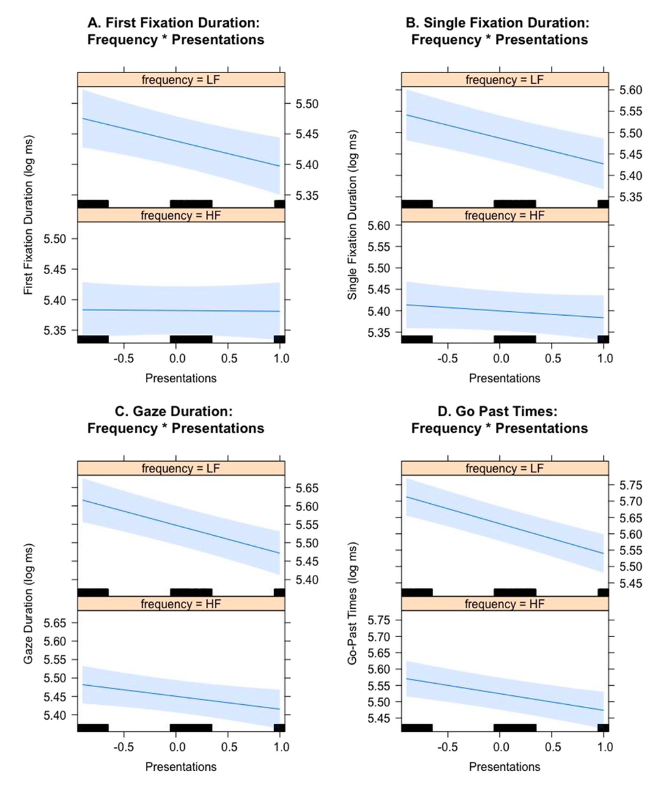
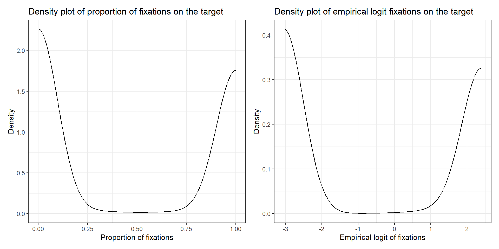
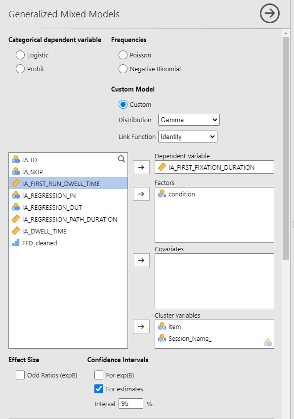

# A tibble: 6 × 101
RECORDING_SESSION_LABEL TRIAL_LABEL TRIAL_INDEX BIN_INDEX AVERAGE_BLINK_SAMPL…
<chr> <chr> <dbl> <dbl> <dbl>
1 sub_1 Trial: 19 1 0 0
2 sub_1 Trial: 19 1 1 0
3 sub_1 Trial: 19 1 2 0
4 sub_1 Trial: 19 1 3 0
5 sub_1 Trial: 19 1 4 0
6 sub_1 Trial: 19 1 5 0
# … with 96 more variables: `AVERAGE_BLINK_SAMPLE_COUNT_%` <dbl>,
# AVERAGE_EXCLUDED_SAMPLE_COUNT <dbl>,
# `AVERAGE_EXCLUDED_SAMPLE_COUNT_%` <dbl>, AVERAGE_GAZE_X_BIN <chr>,
# AVERAGE_GAZE_Y_BIN <chr>, AVERAGE_IA_1_SAMPLE_COUNT <dbl>,
# AVERAGE_IA_2_SAMPLE_COUNT <dbl>, AVERAGE_IA_3_SAMPLE_COUNT <dbl>,
# AVERAGE_IA_4_SAMPLE_COUNT <dbl>, AVERAGE_IA_0_SAMPLE_COUNT <dbl>,
# `AVERAGE_IA_1_SAMPLE_COUNT_%` <dbl>, `AVERAGE_IA_2_SAMPLE_COUNT_%` <dbl>, …Eye-tracking data visualization and analysis
Badaya & Baltais
Welcome back!
Welcome back!
Any questions from yesterday? Has anyone gotten around their data?
Plan of today
- Data wrangling
- Data visualization
- VWP
- Reading
- Data analysis
- VWP
- Reading
Data wrangling
Data wrangling
- Day 4: Data checks & cleaning in Data Viewer
- Visual inspection of raw data (participant and trial exclusion, short/long fixations, fixation adjustment)
- Export data for analysis
Analysis done in R/jamovi/SPSS
Data wrangling
Prior to analysis:
- Import data
- (Re)code levels of interest
- Filter data (e.g., practice/filler trials, trials with no click)
- Transform variables
- Explore data
Data wrangling
Import data
Data wrangling
Identify your variables of interest & ensure they are the appropriate class
# for VWP
etdat <- select(etdat, c(RECORDING_SESSION_LABEL, TRIAL_LABEL, TRIAL_INDEX, BIN_INDEX, IA_1_ID, IA_2_ID, IA_0_ID, `RIGHT_IA_1_SAMPLE_COUNT_%`, `RIGHT_IA_2_SAMPLE_COUNT_%`, `RIGHT_IA_0_SAMPLE_COUNT_%`, clicked, d_pos, dist, feedback, fluency, honesty, nativeness, rt, t_pos, targ, trialtype))
# identify they are the relevant class
unlist(lapply(etdat, class)) RECORDING_SESSION_LABEL TRIAL_LABEL TRIAL_INDEX
"character" "character" "numeric"
BIN_INDEX IA_1_ID IA_2_ID
"numeric" "character" "character"
IA_0_ID RIGHT_IA_1_SAMPLE_COUNT_% RIGHT_IA_2_SAMPLE_COUNT_%
"character" "numeric" "numeric"
RIGHT_IA_0_SAMPLE_COUNT_% clicked d_pos
"numeric" "character" "character"
dist feedback fluency
"logical" "logical" "logical"
honesty nativeness rt
"logical" "logical" "logical"
t_pos targ trialtype
"logical" "logical" "logical" Data wrangling
Recap of variables of interest (besides your experimental variables and session variables, for the analysis taught in this course)
Visual World Paradigm
- BIN_INDEX
- BIN_SAMPLE_COUNT, the number of samples per bin (cf. session 4)
- IA_X_ID, where X is the number of each interest area in your experiment.
- RIGHT_IA_X_SAMPLE_COUNT, , where X is the number of the interest area (NB LEFT/RIGHT), counts (cf. session 4).
- RIGHT_IA_X_SAMPLE_COUNT_%, where X is the number of the interest area (NB LEFT/RIGHT), proportions (cf. session 4).
- RIGHT_EXCLUDED_SAMPLE_COUNT, number of samples excluded from counts (NB LEFT/RIGHT; cf. session 4).
- RIGHT_BLINK_SAMPLE_COUNT (NB LEFT/RIGHT)
Reading
- IA_ID
- IA_SKIP
- IA_FIRST_FIXATION_DURATION
- IA_FIRST_RUN_DWELL_TIME
- IA_REGRESSION_IN
- IA_REGRESSION_OUT
- IA_REGRESSION_PATH_DURATION
- IA_DWELL_TIME
- Inter alia
Data visualization
Data visualization in eye-tracking
Different kinds of data are better explored in different visualizations.
- What visualization conveys (in an informative way) your research question.
- What variables you are interested in.
- What stimuli you used.
- Principles for effective data visualization (Midway, 2020)
Scan path
Pattern of fixations and saccades during a trial.
Bee swarm

Heat map

Visual World Paradigm
- Display of fixations over time.
- Can also do an animation.
- Fixations tend to be comparisons (fixations on the target versus the distractor).
- Histograms might be possible.
- Rarer to find tables.
- Except for model output, of course
Visual World Paradigm
Visual World Paradigm
Amos et al., 2022
Visual World Paradigm
Corley, 2010
Reading
Plot differences in means per condition, e.g., with bar charts.
Many measures → many plots, so only report the most important (if at all).
Reading
Most common in papers: tables.
- Means and SDs (descriptive statistics).
- Model coefficients (inferential statistics).
- For each dependent measure, area of interest, condition, group…
Often entire pages occupied by tables…
Reading
Staub et al., 2007
Reading
Separate table per AI.
Frisson et al., 2017
Reading
Model output.
Frisson et al., 2017
Reading
More interesting plots possible if e.g., repeated exposure (development over time) or continuous predictors.

Data visualization
How to get these figures?
Visual World Paradigm
- Tricky with jamovi
- R & ggplot
- OSF, github
- x-axis: time, y-axis: fixations, line(s): conditions of interest
- Excel?
Reading
- Descriptive statistics with jamovi
- Bar plots with jamovi/R/excel
Descriptives
VWP
- NB: Visualizations, DV.
- Total fixation duration/Average fixation duration/Fixation count/Saccade count (per IA)
- Proportion of fixations to each IA per time window
Reading
- Skipping rate (in %)
- Subsequent duration measures only reported for items that were not skipped during first pass reading.
- Remove skipped items from analysis.
- Report fixation duration and regression rate measures for each condition.
- Mean and SD.
- Aggregate means per participants > Mean of means
- Duration in ms.
Data analysis
Data analysis
What variables are you going to analyse? How are you going to conceptualise them?
- DV: Fixations: counts? proportions? advantage? Reading times? Percentages?
- IV: Categorical: contrast coding? dummy coding? Continuous: Center variable?
Covariates?
Data analysis
Stimuli variables as covariates in analysis
- Word length
- Phrase length
- Sentence length
- Word frequency
- Familiarity
- Participants’ age
- Participants’ gender
- Proficiency
- Inter alia
This does not mean you have to add them.
Data analysis
- What model answers your question?
- Does your data satisfy the model requirements?
- Pre-defined data analysis (cf. pre-registration)
Data analysis
- What model answers your question
ANOVAs & t-test were originally conceived for categorical variables.
(Generalised) linear models cannot account for clusters in our data (e.g., participants’ differences, items’ differences).
Most papers using eye-tracking in the language sciences will employ (generalised) linear mixed models to account for these factors.
Random effects for participant and item (at least).
Multiple comparisons problem (see reading).
Data analysis
- Models have assumptions that eye-tracking data does not meet.
- Where the eye is at time t depends on where it was at time t-1 (i.e., eye movements are not independent from one another, autocorrelation).
- Eye-tracking data might not be continuous.
- Proportions are bounded.
- Reaction times are not normally distributed.
Data analysis
- Models have assumptions that eye-tracking data does not meet.
- Where the eye is at time t depends on where it was at time t-1 (i.e., eye movements are not independent from one another).
- Aggregate into time bins and transformations (Barr, 2008).
- Include an autocorrelation factor.

Stone et al., 2020
Data analysis
- Models have assumptions that eye-tracking data does not meet.
- Eye-tracking data might not be continuous.
- Transformation of our dependent variable.
- Work with generalised models to accommodate a different link function.
Visual World Paradigm
- Binary: Is there a fixation on this area of interest?
- Size of time bins
- Donnelly & Verkuilen (2017)
- Work with proportions
- Bounded [0, 1]
- Transformation: Empirical logits (Barr, 2008): log(count of fixations + .5 / (N - count of fixations + .5))
- Where N will be the number of samples per bin (when working with time binning analysis)
- Other authors have proposed different transformations.
- Some might still argue it’s not ideal (alternative: beta distribution?)
Visual World Paradigm
Visual World Paradigm
In R
# empirical logit
etdat <- etdat %>%
mutate(
target_FixCount = case_when(
IA_1_ID == "1: TARGET" ~ `RIGHT_IA_1_SAMPLE_COUNT`, # NB you may not need to do this (in fact, most likely)
IA_2_ID == "2: TARGET" ~ `RIGHT_IA_2_SAMPLE_COUNT`,
FALSE ~ NA
)
) %>%
mutate(
elog_target = log((target_FixCount + .5)/(sample_count - target_FixCount + .5))
)Visual World Paradigm
Note that when computing empirical logits you may also subtract blinks and off-screen fixations.
- No consensus
Visual World Paradigm
Interest: Time window.
- Average amount of fixations in a time window.
- Are there more fixations when X is present than when it’s not?
- Answers about an average.
Time course analysis:
- Do fixations increase/decrease over time?
- When does this increase happen?
- Linear v Non-linear analysis
Visual World Paradigm
In R
# TW: 0 - 800 ms target onset
# elog_target predicted by fluency
# random intercepts by-participant and by-item
# maximal model (Barr et al., 2012)
mdl_max <- etdat %>%
mutate(
time = BIN_INDEX * 20 # my bins are of 20 ms
) %>%
filter(time < 820) %>%
lmer(
elog_target ~ time * fluency +
(1 + time*fluency | RECORDING_SESSION_LABEL) + (1 + time*fluency| target),
data = .
)Visual World Paradigm
Example of average empirical logits on a time window: Dijkgraaf et al., 2017
- 4-images array
- DV: Average empirical logits on target
- Time window: Verb onset
Visual World Paradigm
Example of binary fixations, time course analysis (bin analysis): Ito et al., 2018
- 4-images array.
- DV: Fixations the object in this time bin.
- Condition was dummy-coded.
- Time window: Every 50 ms bin from 1000 ms before target word onset to 1000 ms.
- NB: Multiple comparisons problem (because the same model is run in each bin).
Visual World Paradigm
Example of binary fixations, time course analysis (time continuous): Bosker et al., 2014
- 2-images array.
- DV: Is there a fixation on the LF object in this time bin (1) or not (0)?
- Time window: Different time windows (fluent/disfluent).
Visual World Paradigm
If you are only interested in whether there is an effect or not over time, fit a (generalised) linear mixed model, you would be fine (yet cf. assumptions of models).
But sometimes our questions revolve around specific times, or rate of increase/decrease (see also Stone et al., 2021; Ito & Knoeferle, 2022).
Visual World Paradigm
Sometimes our questions revolve around specific times, or rate of increase/decrease (see also Stone et al., 2020; Ito & Knoeferle, 2022).
- Growth Curve Analysis
- Divergent Point Analysis
- Generalised Additive Mixed Models
- Cluster Analysis
Visual World Paradigm
Reading
Analysis per interest area!
- Create data subsets
If IA skipped on first pass –> assign NA to certain measures
- Day 4, data pre-processing
Reading
In R
# NB this is dependent on how many IAs you have
# in this example, we have five
precritIA <- rd_dat %>% filter(IA_ID == 2)
critIA <- rd_dat %>% filter(IA_ID == 3)
postcritIA <- rd_dat %>% filter(IA_ID == 4)
# filter for skipping, introduce NAs
# FFD, GD, RPD, regressions-out: remove trials (assign NAs) where IA was skipped on first pass
for (i in critIA$IA_SKIP) {
ifelse(critIA$IA_SKIP[critIA$IA_SKIP == i] == 1, critIA$IA_FIRST_FIXATION_DURATION[critIA$IA_SKIP == i] <- NA, critIA$IA_FIRST_FIXATION_DURATION[critIA$IA_SKIP == i])
ifelse(critIA$IA_SKIP[critIA$IA_SKIP == i] == 1, critIA$IA_FIRST_RUN_DWELL_TIME[critIA$IA_SKIP == i] <- NA, critIA$IA_FIRST_RUN_DWELL_TIME[critIA$IA_SKIP == i])
ifelse(critIA$IA_SKIP[critIA$IA_SKIP == i] == 1, critIA$IA_REGRESSION_PATH_DURATION[critIA$IA_SKIP == i] <- NA, critIA$IA_REGRESSION_PATH_DURATION[critIA$IA_SKIP == i])
ifelse(critIA$IA_SKIP[critIA$IA_SKIP == i] == 1, critIA$IA_REGRESSION_OUT[critIA$IA_SKIP == i] <- NA, critIA$IA_REGRESSION_OUT[critIA$IA_SKIP == i])}Reading
In jamovi
Reading
Dependent variables
- Binary (0/1)
- Probabilities of regression/skipping/re-reading.
- Logistic regression (binomial distribution).
- Continuous
- Reading times (fixation durations in ms), regression/fixation counts.
- Different approaches possible.
Reading
Continuous DV: reaction (incl. reading) times tend to be positively skewed compared to a normal distribution.
Lo & Andrews, 2015
Reading
Continuous DV: reaction (incl. reading) times tend to be positively skewed compared to a normal distribution.
- Option 1: Linear Mixed Models anyway
- Log or inverse transformation to satisfy normality assumption
- Box-Cox procedure (Osborne, 2019)
Reading
Continuous DV: reaction (incl. reading) times tend to be positively skewed compared to a normal distribution.
- Option 1: Linear Mixed Models anyway
- Log or inverse transformation to satisfy normality assumption
- Box-Cox procedure (Osborne, 2019)
Reading
Continuous DV
- Option 1: Linear Mixed Models
- Some researchers combine data transformation with cutting off the outliers: > 2.5 SD from the average per participant and per condition.
- But - potential loss of precious informative data.
Reading
Continuous DV
- Option 2: Generalized Linear Mixed Models
“Rather than transforming the dependent variable to eliminate this deviation from normality, GLMM allows the researcher to select a theoretical distribution that matches the properties of measured RT.” (Lo & Andrews, 2015)
- E.g., Gamma distribution (identity link)
Reading
Continuous DV
- Option 2: Generalized Linear Mixed Models
Hermena et al., 2021
Reading
- Several dependent measures on the same IA
- Correct for multiple comparisons!
- Not standard yet although should be
- See von der Malsburg & Angele (2017). False positives and other statistical errors in standard analyses of eye movements in reading.
Bonferroni (most conservative), also Holm-Bonferroni, FDR…
- E.g., 6 measures for the critical IA
- \(\alpha\) / 6 = 0.05 / 6 = 0.0083
Reading
In R
#### Skipping
summary(skip0 <- glmer(IA_SKIP ~ condition + (1 + condition | item) + (1 + condition | participant), family = binomial, data = critIA))
#### First fixation duration
summary(ffd0 <- glmer(IA_FIRST_FIXATION_DURATION ~ condition + (1 + condition | item) + (1 + condition | participant), family = Gamma(link = "identity"), data = critIA))
#### Etc. for the rest of the measures and IAs
# Correction for multiple comparisons, e.g., Holm-Bonferroni
# For each IA separately
# formula: p.adjust(<p-value>, method = <correction method>, n = <number of comparisons>)Reading
In jamovi, for one area and one measure at a time
Wrap up
Wrap up
References
Amos, R. M., Seeber, K. G., & Pickering, M. J. (2022). Prediction during simultaneous interpreting: Evidence from the visual-world paradigm. Cognition, 220, 104987.
Barr, D. J. (2008). Analyzing ’visual world’eyetracking data using multilevel logistic regression. Journal of memory and language, 59(4), 457-474.
Bosker, H. R., Quené, H., Sanders, T., & De Jong, N. H. (2014). Native ’um’s elicit prediction of low-frequency referents, but non-native ’um’s do not. Journal of memory and language, 75, 104-116.
Clifton, C., Staub, A., & Rayner, K. (2007). Eye movements in reading words and sentences. In R. P. G. Van Gompel, M. H. Fischer, W. S. Murray, & R. L. Hill (Eds.) Eye Movements: A window on mind and brain (pp. 341–371). Oxford: Elsevier.
Cop, U., Dirix, N., Assche, E. V., Drieghe, D., & Duyck, W. (2017). Reading a book in one or two languages? An eye movement study of cognate facilitation in L1 and L2 reading. Bilingualism: Language and Cognition, 20(4), 747–769. https://doi.org/10.1017/S1366728916000213
Corley, M. (2010). Making predictions from speech with repairs: Evidence from eye movements. Language and Cognitive Processes, 25(5), 706-727.
References
Dijkgraaf, A., Hartsuiker, R. J., & Duyck, W. (2017). Predicting upcoming information in native-language and non-native-language auditory word recognition. Bilingualism: Language and Cognition, 20(5), 917-930.
Drieghe, D., & Chan Seem, R. (2022). Parafoveal processing of repeated words during reading. Psychonomic Bulletin & Review, 29(4), 1451–1460. https://doi.org/10.3758/s13423-021-02054-0
Frisson, S., Harvey, D. R., & Staub, A. (2017). No prediction error cost in reading: Evidence from eye movements. Journal of Memory and Language, 95, 200–214. https://doi.org/10.1016/j.jml.2017.04.007
Hermena, E. W., Bouamama, S., Liversedge, S. P., & Drieghe, D. (2021). Does diacritics‐based lexical disambiguation modulate word frequency, length, and predictability effects? An eye‐movements investigation of processing Arabic diacritics. PLOS ONE, 16(11), e0259987. https://doi.org/10.1371/journal.pone.0259987
Ito, A., Pickering, M. J., & Corley, M. (2018). Investigating the time-course of phonological prediction in native and non-native speakers of English: A visual world eye-tracking study. Journal of Memory and Language, 98, 1-11.
Ito, A., & Knoeferle, P. (2022). Analysing data from the psycholinguistic visual-world paradigm: Comparison of different analysis methods. Behavior Research Methods, 1-33.
References
Lo, S., & Andrews, S. (2015). To transform or not to transform: Using generalized linear mixed models to analyse reaction time data. Frontiers in Psychology, 6. https://www.frontiersin.org/articles/10.3389/fpsyg.2015.01171
Osborne, J. (2010). Improving your data transformations: Applying the Box-Cox transformation. Practical Assessment, Research, and Evaluation, 15(1). https://doi.org/10.7275/qbpc-gk17
Puebla, C., & Felser, C. (2022). Discourse Prominence and Antecedent Mis-Retrieval during Native and Non-Native Pronoun Resolution. Discours. Revue de Linguistique, Psycholinguistique et Informatique. A Journal of Linguistics, Psycholinguistics and Computational Linguistics, 29, Article 29. https://doi.org/10.4000/discours.11720
Staub, A., Rayner, K., Pollatsek, A., Hyönä, J., & Majewski, H. (2007). The time course of plausibility effects on eye movements in reading: Evidence from noun-noun compounds. Journal of Experimental Psychology. Learning, Memory, and Cognition, 33(6), 1162–1169. https://doi.org/10.1037/0278-7393.33.6.1162
References
Stone, K., Lago, S., & Schad, D. J. (2021). Divergence point analyses of visual world data: Applications to bilingual research. Bilingualism: Language and Cognition, 24(5), 833-841.
von der Malsburg, T., & Angele, B. (2017). False positives and other statistical errors in standard analyses of eye movements in reading. Journal of Memory and Language, 94, 119–133. https://doi.org/10.1016/j.jml.2016.10.003

Eye-tracking data visualization and analysis